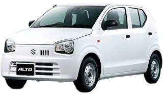
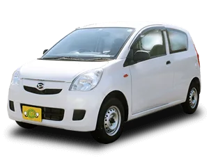
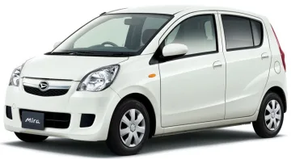
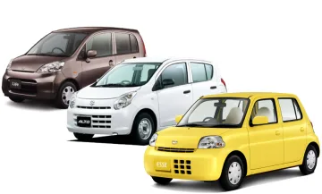

代車・納車待ちの利用シーンガイド
代車・納車待ちのレンタカーはいくら？
借り方・料金の内訳・注意点
事故・車検・修理・新車の納車待ち―「返却日が決まらない」ときの車の借り方

先に結論
代車や納車待ちの車が必要になったら、最初に保険会社・修理工場・購入予定の販売店へ代車の可否を確認します。自費で借りる場合、返却日が決まっている1ヶ月未満は日額の短期レンタカーが安くなりやすく、返却時期が読めない・延びる可能性がある、または概ね1ヶ月以上なら、月極め型が延長のしやすさと総額の面で有利になりやすい傾向があります。

特定の日数だけで損益分岐を断定することはできません。「短期レンタカーの日額×必要日数」と「月極め料金」を、同じ車格・補償・受渡条件で見積もってください。安全に使い続けられる状態なら、修理や納車まで現在の車を使う選択肢も、整備工場などへ相談したうえで検討できます。
01代車・納車待ちでレンタカーが必要になる場面
車を使えない理由によって、手配の急ぎ度、期間の読みやすさ、最初の相談先が変わります。自分で契約する前に、次の順で確認しましょう。
| 場面 | 急ぎ度 | 期間の読みやすさ | 最初の確認先 | 代車が用意される可能性 |
|---|---|---|---|---|
| 事故（被害・加害を問わず） | 高い | 修理・事故対応で動きやすい | 双方の保険会社、修理工場 | 契約・必要性・工場在庫による |
| 車検 | 予約時に準備しやすい | 比較的読みやすい | 車検を依頼する店舗・工場 | 工場のサービス・在庫による |
| 一般修理・故障 | 故障状況による | 部品入荷や診断で動く | 修理工場、保険会社 | 工場在庫・保険契約による |
| 板金・塗装修理 | 走行可否による | 損傷範囲で動く | 板金工場、保険会社 | 工場在庫・保険契約による |
| リコール対応 | 案内内容による | 作業・部品状況で変わる | メーカー系列の販売店 | 販売店の方針・在庫による |
| 新車・中古車の納車待ち | 現在の車の有無による | 物流・登録で延びる場合がある | 購入予定の販売店 | 販売店の方針・在庫による |
| 買い替えの端境期 | 売却日との間隔による | 売却・納車日の両方で動く | 購入店、売却先 | 販売店との契約・在庫による |
工場や販売店が車を用意できる可能性はありますが、費用、期間、車格、台数は事業者ごとに異なります。「代車あり」という案内だけで判断せず、利用条件まで確認してください。
02代車と納車待ちの違い、自費と保険・工場手配の分かれ道
代車は、事故・車検・修理などで自分の車を一時的に使えない間の車です。納車待ちの車は、購入契約後、新車や中古車が届くまでの移動手段を指します。必要な車は同じでも、費用を相談する相手が異なります。
| 状況 | 最初の相談先 | 用意がない場合 |
|---|---|---|
| 事故 | 保険会社と修理工場に、手配方法と費用負担を確認 | 保険会社の承認条件を確認してから自費レンタカーを検討 |
| 車検・修理・板金 | 工場や販売店に、車の有無と費用を確認 | 短期と月極めを必要期間で比較 |
| 納車待ち | 購入予定の販売店に、納期と車の有無を確認 | 納期の幅を見込み、延長・途中返却条件も含めて自費手配 |
- 1
用意してもらえる車があるか確認
保険会社・工場・販売店に、車の有無、費用、期間、補償を聞きます。
- 2
自費なら返却日の確かさを整理
返却日が決まる短期か、延びる可能性がある長期かを見積もります。
- 3
同じ条件で総額を比較
車格、補償、配車・引取、距離、途中返却までそろえて見積もります。
03保険会社・修理工場が用意する代車について確認すべきこと
証券や契約画面だけで判断せず、今回の事故が対象かを保険会社へ確認します。
自分で借りてから請求する方法でよいか、手配先の指定があるかを確認します。
代車の必要性、実際に発生した費用などが関係します。期間や車格も事前に相談します。
双方に責任がある事故では、損害賠償額が過失割合を踏まえて調整される場合があります。
車検・修理時の工場代車は保険給付とは別で、費用の有無や条件に共通基準はありません。
貸主の保険・契約、自分の他車運転危険補償特約などの対象と免責を確認します。
日本損害保険協会の損害保険Q&Aでは、事故車を使えない期間にやむを得ず代替車を借り、実際に費用が生じた場合に、代車費用が損害として認められる可能性を説明しています。一方、ほかに使える車や交通手段がある場合など、個別事情で判断が分かれます。工場などから費用負担なく借りられ、実費が生じていない車については、請求する代車費用自体が発生していないと考えられます。
事故の当事者双方に責任がある場合は過失割合が損害賠償額の決定に関係します。自賠責保険の人身損害に関する重過失減額の基準を、車の修理代や代車費用へそのまま当てはめることはできません。事故ごとの扱いを保険会社へ確認してください。
04料金の内訳をすべて確認する
「1日○円」「月額○円」だけでは支払総額を比べられません。見積書で次の費目を一つずつ確認します。
基本料金
車両を契約期間中に使う料金。当社A-Classは1ヶ月税抜24,000円です。
保険・車両補償
対人・対物・人身・車両の補償上限、免責額、運転者条件を確認します。
CDW・免責補償
当社はA〜D-Classが1ヶ月税抜10,000〜15,000円、E・F1・F2-Classが税抜15,000〜20,000円です。
NOC
当社は自走返却が税抜30,000円、自走不能が税抜50,000円で、CDWとは別です。
走行距離
当社の目安は1ヶ月3,000km、超過時は1kmにつき税抜10円です。
配車・引取
対応地域、片道・往復の料金、修理工場や自宅を指定できるかを確認します。
燃料返却
満タン返し、実走行分精算などの方法と、未給油時の計算方法を確認します。
オプション
当社のETC車載器・カーナビ・チャイルドシートは各1ヶ月税抜2,000円、スタッドレスタイヤは税抜6,000円です。
季節・洗車・キャンセル
当社ハイシーズン料金の目安は1ヶ月税抜3,000〜8,000円です。洗車・クリーニング費用や取消条件は店舗へ確認します。
途中解約・延長
早期返却の返金・日割り、中途解約手数料、延長単位と手数料を契約前に確認します。
当社の配車・引取条件、初期手数料、キャンセル料、途中返却時の精算、延長日割り、清掃関連費用は一律の固定値を公開していません。利用店舗へご確認ください。
車種別の1ヶ月料金や追加費用は、レンタカーを1ヶ月借りる場合の料金相場でも詳しく整理しています。

05返却時期が延びた・早まった場合の延長と解約
期間未定の契約で大切なのは、長くなったときだけでなく、早く返せることになったときの条件です。口頭説明だけでなく、見積書と貸渡約款で確認しましょう。
| 予定変更 | 連絡の目安 | 確認項目 |
|---|---|---|
| 修理・納車が延びる | 延長の可能性が分かった時点 | 延長可否、単位、料金、同じ車両を使えるか |
| 修理・納車が早まる | 新しい返却日が分かった時点 | 途中返却可否、返金、日割り、中途解約手数料 |
| 返却場所が変わる | 場所の変更が分かった時点 | 変更可否、回送・引取料金、立会い方法 |
当社は1ヶ月単位の延長に対応していますが、空車状況や次の予約により希望どおりにならない場合があります。延長の連絡期限や追加手数料、早期返却の返金・日割り・違約金は一律の条件を公開していないため、店舗へ確認してください。
修理完了・納車確定後の返却手順
- 1
日程が決まったら貸主へ連絡
修理工場や販売店から確定日を聞いた時点で、希望返却日と場所をレンタカー会社へ伝えます。
- 2
返却条件と精算を確定
店舗返却か引取か、立会い時刻、引取料金、早期返却の返金・手数料を確認します。
- 3
燃料・荷物・付属品を確認
契約どおりに給油し、私物を降ろして、鍵・車検証・オプション品などをそろえます。
- 4
車両確認と書類受領
傷、燃料、走行距離を貸主と確認し、返却完了書類や領収書を受け取ります。保険請求がある場合は必要書類の提出先も確認します。
06代車・納車待ちレンタカー選びのチェックリスト
同じ月額でも、使える場所・車・手続きが違います。問い合わせ時に次の8項目をまとめて伝えると比較しやすくなります。
契約期間
開始日、最短見込み、最長見込み、返却日未定であることを伝える。
受渡場所
店舗、修理工場、販売店、自宅、勤務先のどこを希望するか伝える。
車種・車格
乗車人数、荷物、高速道路、駐車場サイズから必要条件を整理する。
必要書類
運転者全員の免許証、本人確認、支払方法、法人書類の要否を聞く。
手配までの時間
いつから使えるか、営業時間外の受取可否、在庫確定時期を確認する。
オプション
チャイルドシート、ETC車載器、カーナビ、冬用タイヤの在庫を確認する。
法人・業務利用
社用車・営業車・貨物用途が契約条件に合うかを伝える。
保険との調整
事故代車では、自己手配前の承認、請求書の宛名、提出書類を確認する。
07料金シミュレーション
確認できる基本料金と、見積もりが必要な項目を分けます。短期料金や精算条件を仮定して合計することはしません。
CASE 1
車検で1〜2週間だけ代車が必要
- 確認できる基本料金
- 短期レンタカーの日額×利用日数
- 先に確認
- 工場代車の費用と利用条件
- 見積確認
- 補償、延長、受渡、燃料
判断の目安返却日が決まる短期なら日額プランも比較
月額を日割りした仮の料金では比較できません。利用予定日数で短期レンタカーの見積もりを取り、工場の車と比べます。
CASE 2
事故修理で1ヶ月以上・期間未定
- 当社A-Class
- 1ヶ月 税抜24,000円
- CDW
- 1ヶ月 税抜10,000〜15,000円
- 見積確認
- NOC、配車、延長、保険承認
確認できる総額税抜34,000〜39,000円＋条件別費用
自費契約の例です。保険からの支払い可否は契約内容と事故状況で異なるため、借りる前に保険会社へ確認します。
CASE 3
新車の納車待ちで1〜2ヶ月
- 当社B-Class
- 1ヶ月 税抜27,000円
- 2ヶ月の基本料金
- 税抜54,000円
- 見積確認
- 配車、延長、早期返却、オプション
確認できる総額税抜54,000円＋条件別費用
2ヶ月利用できた場合の基本料金です。納車が早まった場合の返金・日割りは含めず、契約前に店舗へ確認します。
08ディーラー代車・保険代車・自社レンタカーを正直に比較する
短期なら工場・販売店や保険会社経由の車が、費用と手続きの面で合うことがあります。自費レンタカーは、用意がない場合や期間が長くなる場合の選択肢です。
| 選択肢 | 費用 | 期間の柔軟性 | 車種の幅 | 延長 |
|---|---|---|---|---|
| 工場・販売店の代車 | サービスの場合と有料の場合がある | 修理・納車日程に合わせやすい場合がある | 在庫車中心 | 次の予約次第 |
| 保険会社経由の代車 | 対象なら自己負担を抑えられる場合がある | 補償対象期間・上限による | 車格条件による | 保険会社の承認が必要な場合がある |
| 当社レンタカー | A-Class 1ヶ月税抜24,000円から | 月単位の長期利用向け | 店舗在庫とクラスによる | 1ヶ月単位、事前相談 |
1〜2週間程度で返却日が決まり、工場・販売店・保険会社が条件に合う車を用意できるなら、そちらが手間を抑えやすいでしょう。期間が読めない、1ヶ月以上になりそう、用意できる車がない場合に、長期レンタカーを同条件で比較します。
09主要な長期レンタカー会社の比較
代車・納車待ちで重要な最短期間、早期返却、延長、配車を中心に、2026年8月8日に公式情報を確認しました。車両・地域・補償は同一条件ではありません。
公式サイトで確認できた代車・納車待ち案内


| 会社・クラス | 最短契約 | 公開月額 | 早期返却 | 延長 | 配車・引取 | 車種・車格指定 |
|---|---|---|---|---|---|---|
|
 マンスリーレンタカー A-Class |
1ヶ月 | 24,000円 | 返金・日割り条件は店舗確認 | 1ヶ月単位、空車状況を事前相談 | 地域・条件により対応できる場合あり | 希望クラスを店舗へ相談。特定車種の確約は要確認 |
|
 ガッツレンタカー A-1クラス |
24時間 | 24,800円 | 未利用期間の料金から所定の中途解約手数料を差し引く規定。店舗で確認 | 契約店の事前承認が必要 | 店舗に確認 | クラス予約。特定車種は指定不可 |
|
 GOGOマンスリーレンタカー 軽自動車ノーマル |
1週間 | 約41,600円 | 残日数が30日未満の場合は原則返金なしとの案内。条件確認 | 返却日変更を事前相談 | 地域・条件により宅配・回収 | クラス・カテゴリ選択。特定車種は指定不可 |
| ニコニコレンタカー Kクラス マンスリー | 1週間 | 88,000円 | 承認後、未利用期間の基本料金の半額を返金する案内。条件確認 | 利用店舗へ相談 | 取扱店舗・条件により異なる | 原則クラス予約。車種指定でも代替の場合あり |
|
 業務レンタカー A-1クラス |
1日 | 24,000円 | 早期返却は事前連絡。具体的な精算式は店舗確認 | 次の予約がなければウェブ手続きで延長可能 | 配車なし、店舗受取・返却 | 出発20日以内は個別車両、それ以前はクラス選択 |
- 公開月額は軽自動車系クラスの30日相当を中心に税抜換算しています。
- 最短契約と公開月額は別です。短期利用時はその日数の見積もりを取ってください。
- 中途解約・延長・配車は、予約経路、店舗、地域、在庫、契約時期で条件が変わる場合があります。
10安く・賢く借りるコツ
- 1
保険・工場・販売店の車を先に確認する
自費契約の前に、用意の有無、費用、期間、補償を確認します。
- 2
必要以上に大きい車格を選ばない
人数、荷物、高速道路、駐車場から必要な条件を決めます。
- 3
配車・引取を往復で比べる
月額が安くても、受渡場所までの回送費で総額が上がる場合があります。
- 4
延長と早期返却を同時に確認する
延びた場合の追加料金と、早まった場合の返金・手数料をセットで聞きます。
- 5
補償条件をそろえる
免責額、NOC、対象外事項が異なる見積もりを、基本料金だけで比べないようにします。
- 6
同じ利用条件を複数社へ伝える
期間、車格、距離、受渡場所、オプションをそろえ、税抜内訳と支払総額を比較します。
11当社の代車・納車待ちプランの案内
当社は1ヶ月から利用でき、車両レンタル、対人・対物保険、車両補償、車検・整備、メンテナンス、税金を基本料金に含みます。修理期間や納車日が読めず、月単位で延長する可能性がある方に向くプランです。
| クラス | 車両タイプ | 1ヶ月料金 |
|---|---|---|
| A-Class | 軽自動車 | 24,000円 |
| B-Class | 軽ワゴン | 27,000円 |
| C-Class | 広めの軽 | 36,000円 |
| D-Class | 軽トラ・箱バン | 36,000円 |
| E-Class | 普通車エコカー | 63,000円 |
| F1-Class | ファミリーカー | 63,000円 |
| F2-Class | 大型ファミリーカー | 81,000円 |
当社は1ヶ月からの契約です。早期返却時の返金・日割り、延長の連絡期限・手数料、配車範囲・料金、車格指定は店舗や条件で異なります。契約前にご確認ください。
希望の車種クラスと期間を送るだけ
利用エリアを選んで
1ヶ月の総額を確認する
車種・受取場所・補償を含む見積もりを
店舗ごとに確認できます。
店舗選択後、各店舗ページから
電話・LINE・メールで相談できます。
12よくある質問
Q過失割合が自分にある場合、相手方の代車費用は自分の保険から出ますか？
一律には判断できません。相手方への代車費用が損害賠償上認められるか、過失割合でどう調整されるか、契約中の対物賠償責任保険でどう扱われるかは、事故状況と契約内容で異なります。自分が使う代車の費用特約とは別の論点なので、手配前に保険会社または代理店へ確認してください。
Q車の修理が長引いて返却日が決まらない場合でも借りられますか？延長はどうすればいいですか？
当社は1ヶ月契約と1ヶ月単位の延長に対応しています。ただし、空車状況や次の予約により同じ車両を延長できない場合があります。延長の可能性が分かった時点で店舗へ相談し、連絡期限、追加料金、車両入替の有無を確認してください。
Q修理工場やディーラー、自宅まで配車してもらえますか？
地域や条件により、修理工場、ディーラー、自宅、勤務先への配車・引取に対応できる場合があります。対応範囲、受渡場所、料金は店舗や条件で異なるため、見積もり時に確認してください。
Q事故の代車と納車待ちの代車で、借り方に違いはありますか？
事故では保険会社と修理工場へ、納車待ちでは販売店へ先に代車の可否を確認します。自費でレンタカーを契約する流れは大きく変わりませんが、事故では代車費用が補償や損害賠償の対象になるかを契約前に確認する必要があります。
Q車種・車格を指定できますか？
希望は伝えられますが、在庫状況により車種や車格を確約できない場合があります。必要な乗車人数、荷物量、用途を伝え、指定の可否と追加料金を店舗へ確認してください。
Q短期間（1〜2週間程度）と月極め、どちらが安く済みますか？
返却日が決まっている1〜2週間程度なら、短期レンタカーの日額プランが安い場合があります。返却時期が読めない、延びる可能性がある、または概ね1ヶ月以上なら、月極め型が総額と延長手続きの面で合う場合があります。同じ車格・補償・受渡条件で見積もりを比較してください。
Q新車の納車が早まった場合、途中で返却できますか？料金は返金されますか？
途中返却を受け付ける会社でも、未利用期間の返金、日割り精算、中途解約手数料の扱いは異なります。当社も一律の固定条件を公開していないため、契約前に早期返却時の精算方法を店舗へ確認してください。
Q代車を借りている間に自分が事故を起こしてしまった場合はどうなりますか？
安全を確保して警察と貸主へ連絡し、貸主の案内に従ってください。代車に付く保険・補償、貸渡契約、自分の他車運転危険補償特約などで扱いが分かれ、すべての損害が補償されるとは限りません。運転前に対象者、免責額、NOC、対象外事項を確認してください。
調査方法・参考資料
2026年8月8日に、保険に関する公的資料と各社公式サイトの料金・利用条件を確認しました。税抜表示のない料金は1.10で除して換算しています。掲載写真・ロゴ・車両画像は、同日に各社公式サイトで確認した素材をリポジトリへ保存し、必要な画像だけ表示サイズに最適化しています。最新の料金・補償・空車・契約条件は、契約前に保険会社・修理工場・販売店・各レンタカー会社へご確認ください。
- 日本損害保険協会 損害保険Q&A 問28「過失割合とは」
- 日本損害保険協会 損害保険Q&A 問46「修理期間中の代車費用」
- 日本損害保険協会 損害保険Q&A 問15「車両保険」
- 日本損害保険協会 損害保険Q&A 問18「任意保険の特約」
- マンスリーレンタカー公式サイト
- マンスリーレンタカー朝霞台店 公式ページ（車両受渡し写真）
- マンスリーレンタカー立川店 公式ページ（料金相談写真）
- マンスリーレンタカー大宮店 公式ページ（返却確認写真）
- ガッツレンタカー A-1クラス料金
- ガッツレンタカー 代車の案内
- ガッツレンタカー レンタカー利用規約
- GOGOマンスリーレンタカー 料金表
- GOGOマンスリーレンタカー 車検・修理・納車待ちの代車案内
- GOGOマンスリーレンタカー よくある質問
- ニコニコレンタカー 長時間コース料金
- ニコニコレンタカー よくある質問
- ニコニコレンタカー 配車サービス料金
- 業務レンタカー 車両・料金
- 業務レンタカー ご予約方法・延長案内
- 業務レンタカー よくある質問
- 公開日
- 最終更新日
- 料金・サービス調査日